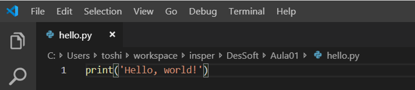
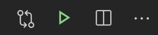

01 - Introdução ao Python, Variáveis, Operações Matemáticas e Funções¶
O Python¶
O nome Python teve a sua origem no grupo humorístico britânico Monty Python (se tiver curiosidade, é possível encontrar alguns títulos no Netflix).

A linguagem Python foi desenvolvida por Guido van Rossum no início da década de 1990. Apesar de ser uma linguagem relativamente antiga, o seu uso apresentou um crescimento significativo nos últimos anos e é hoje uma das linguagens de programação mais populares no mundo, sendo amplamente utilizada por grandes empresas como Google, Netflix, Nasa, Dropbox, e muitos outros.
Neste primeiro handout vamos desenvolver nossos primeiros programas em Python, utilizando os seguintes conceitos básicos de programação: operações matemáticas, variáveis e funções.
Instalação¶
Existem diversas formas de instalar o Python. Recomendamos a instalação através do Anaconda, que já inclui o Python e alguns módulos adicionais que serão úteis em outras disciplinas. Para isso, acesse o link de instalação referente ao seu sistema operacional:
- Windows: https://docs.anaconda.com/anaconda/install/windows/
- macOS: https://docs.anaconda.com/anaconda/install/mac-os/
- Linux: https://docs.anaconda.com/anaconda/install/linux/
Para escrever e editar o nosso código será necessário utilizarmos um editor de código. Existem diversas alternativas, mas nesta disciplina focaremos no Visual Studio Code (VS Code), um dos editores mais populares atualmente. Veremos que o código é essencialmente texto, então poderíamos utilizar qualquer editor de texto disponível, mas editores como o VS Code possuem diversas ferramentas que facilitam o desenvolvimento.
É provável que o VS Code já tenha sido instalado juntamente com o Anaconda. Para verificar, abra o Anaconda Navigator (um programa instalado com o Anaconda), procure pelo VS Code e clique em Launch. Se ele mostrar a opção de instalar, você pode instalá-lo pelo próprio Anaconda Navigator. Caso contrário, você pode fazer o download no seguinte link: https://code.visualstudio.com/Download
Olá Mundo!¶
Quando vamos aprender uma nova linguagem de programação é comum escrevermos um primeiro programa que, ao ser executado, mostra na tela o texto Hello, world! ("Olá, mundo!"). Apesar de ser um programa muito simples, ele já nos permite começar a compreender dois aspectos da linguagem:
- Qual é a "cara" da linguagem, ou seja, qual é a estrutura básica do código.
- Como executar um programa escrito nessa linguagem.
Então mãos à obra!
EXERCÍCIO 1¶
Siga os passos a seguir para escrever e executar seu primeiro programa em Python:
- Abra o VS Code.
- Crie um novo arquivo clicando em "File → New File" ou utilizando o atalho Ctrl+N (Windows)/Cmd+N (macOS).
- Salve o arquivo com o nome
hello.py. Para isso, clique em "File → Save", preencha o nome, escolha uma pasta para salvar o arquivo e clique em "Save". - Digite o código
print('Hello, world!') - Salve o arquivo clicando em "File → Save" ou usando o atalho Ctrl+S (Windows)/Cmd+S (macOS).
- Execute seu programa. Para executar um programa em Python, temos quatro possibilidades:
- Clique em "Run → Run Without Debugging"
- Utilize o atalho Ctrl+F5
- Clique na setinha verde no canto superior direito: 
- [Avançado] Utilizando o terminal para ir até a pasta onde se encontra o arquivo e executando-o com o comando
python hello.py
- O texto Hello, world! deve aparecer no terminal.
Entendendo nosso primeiro programa¶
Nosso código possui apenas uma linha, mas já contém diversos conceitos importantes. Não se preocupe se não entender toda a explicação a seguir, tudo ficará mais claro conforme formos aprendendo mais. A linha print('Hello, world!') pode ser lida como: "Python, por favor, mostre na tela o texto Hello, world!. Vamos por partes.
Comecemos pela a função print. Essa função é utilizada para mostrar texto no terminal. Podemos entender uma função como um comando do Python, ou seja, estamos dizendo para o Python fazer algo. A ação de mostrar algo na tela depende de uma informação adicional: o que deve ser mostrado. Essa informação da qual a ação depende é chamada de argumento da função. No nosso exemplo, o argumento da função print é o texto 'Hello, world!'.
Um último detalhe importante é o uso das aspas. Para indicar que Hello, world! é um texto nós utilizamos aspas, que podem ser simples ou duplas. Isso é muito importante, pois o que estiver entre aspas será considerado pelo Python como texto (que chamamos de string) e não como um comando (por exemplo a função print).
Dica Pro: documente o código!
Uma lição a ser aprendida é que passamos muito mais tempo lendo código pré-existente do que escrevendo código novo. Por isso a documentação do código é uma prática extremamente importante. A documentação pode ser feita por meio de comentários, trechos de texto que não afetam o comportamento do programa, que ajudam o leitor (seja algum colega de trabalho que não conhece o código ou você mesmo algum tempo no futuro) a compreender o código.
Veja a seguir um exemplo do mesmo programa que acabamos de executar, mas com documentação:
"""
Programa que escreve "Hello, world!" no console.
Serve para verificar se conseguimos usar o Python pela primeira vez.
@author: Profs. Design de Software
"""
print('Hello, world!')
O texto entre """ será ignorado pelo programa. Note que nesse comentário podemos encontrar informações como:
- O que o código faz;
- Por que ele foi escrito;
- Quem escreveu o código.
Esse primeiro programa ainda é muito simples, mas conforme formos desenvolvendo programas mais complexos os comentários se tornam cada vez mais relevantes.
Buscando ajuda
Depois de pensar e tentar resolver problemas por conta própria e não encontrar a solução, não tenha vergonha de procurar ajuda na internet. Até mesmo programadores experientes fazem isso. É importante, entretanto, saber como fazer essas buscas: que termos usar, quais respostas confiar, etc. Você vai desenvolver uma intuição conforme for ganhando experiência, mas para te ajudar neste começo, escrevemos um pequeno guia com algumas dicas.
Operações matemáticas¶
Queremos usar o Python para fazer algo além de só mostrar um texto na tela. Para isso vamos começar aprendendo sobre como realizar operações matemáticas.
EXERCÍCIO 2¶
Crie um novo arquivo chamado operadores.py no VS Code e copie o código a seguir. Execute-o e tente identificar a partir dos resultados o que cada operador faz. Discuta com seus colegas.
print('Usando alguns operadores numéricos:')
print(2 + 3)
print(2 - 3)
print(2 * 3)
print(2 ** 3)
print(7 / 3)
print(7 // 3)
print(7 % 3)
print((1 + 2) * (-3 - 2))
Importante
O programa em Python é executado linha a linha, ou seja, as linhas do programa são executadas uma após a outra de cima para baixo. Uma linha de código só é executada depois que a linha anterior terminou de executar.
Resposta
Leia a resposta apenas depois de discutir com seus colegas.
O código abaixo foi comentado com as respostas. Comentários em Python são iniciados com o caractere cerquilha (#). Tudo o que vier depois desse caractere será ignorado pelo programa.
"""
Programa para demonstrar alguns operadores numéricos.
@author: Profs. Design de Software
"""
print('Usando alguns operadores numéricos:')
print(2 + 3) # Soma.
print(2 - 3) # Subtração.
print(2 * 3) # Multiplicação.
print(2 ** 3) # Potenciação ou exponenciação.
# Operadores de divisão
print(7 / 3) # Divisão.
print(7 // 3) # Divisão inteira: quociente.
print(7 % 3) # Resto da divisão inteira.
# É possível utilizar parênteses para modificar a ordem
# de aplicação das operações.
print((1 + 2) * (-3 - 2)) # Parênteses.
Mais alguns detalhes...
No programa acima podemos observar mais alguns detalhes:
- A cerquilha (
#) que inicia um comentário pode ser inserida no começo de uma linha ou precedida por 2 espaços depois de um trecho de código. Esses dois espaços antes da cerquilha não são obrigatórios, mas são um padrão adotado pela comunidade Python. - Os operadores e números estão separados por espaços. Esses espaços também não são obrigatórios, mas facilitam na interpretação visual.
A ordem de prioridade dos operadores em Python segue a convenção matemática do PEMDAS:
- Parênteses têm a maior prioridade e pode ser usado para forçar uma expressão a ser avaliada na ordem que você quiser.
- Exponenciação tem a próxima precedência mais alta.
- Multiplicação e
- Divisão têm a mesma precedência, que é maior do que a
- Adição e
- Subtração.
Além disso, as operações de mesma prioridade são avaliadas da esquerda para a direita.
EXERCÍCIO 3¶
Escreva um programa em Python que imprime (mostra na tela com o comando print) o resultado das seguintes expressões numéricas:
- 1 + \frac{1}{2} + \frac{1}{2^2} + \frac{1}{2^3} + \frac{1}{2^4} (resposta esperada:
1.9375) - \frac{3\cdot4+5}{1+2\cdot3} (resposta esperada:
2.4285714285714284→ não se preocupe se der alguma diferença nas últimas casas decimais) - \sqrt{3^2+4^2} (resposta esperada:
5.0)
Variáveis¶
Podemos armazenar valores ou resultados de expressões matemáticas em variáveis. Uma variável é como se fosse uma caixa com uma etiqueta com o seu nome. O conteúdo armazenado na caixa pode ser acessado a partir do nome em sua etiqueta. Considere o exemplo a seguir:
x = 5
print(x)
Devemos ler a primeira linha como: "a variável x recebe o valor 5". É como se disséssemos: "interpretador Python, por favor, crie na memória do computador uma caixa chamada x e guarde lá dentro o valor 5."
A linha seguinte pede para o Python imprimir o conteúdo da variável x, nesse caso, 5. Assim, o Python vai escrever 5 no terminal.
Podemos usar variáveis dentro de outras expressões. Por exemplo:
x = 3
y = 4
z = x * y
print('O retângulo de lados {0} e {1} tem área {2}'.format(x, y, z))
Info
Usamos o .format() para escrever valores no meio do texto. É importante notar que:
- A sequência dos argumentos (conteúdo dentro dos parênteses do
.format()) é importante. - O primeiro argumento (
x) será inserido no lugar do{0}, o segundo argumento (y) será inserido no lugar do{1}e o terceiro argumento (z) será inserido no lugar do{2}. - Em Python (e em programação em geral) começamos a contar a partir do zero, ou seja, 0 é o primeiro, 1 é o segundo, 2 é o terceiro e assim por diante.
- O
.format()é executado primeiro, escrevendo os valores no meio do texto, e depois o resultado é utilizado pela funçãoprint(), mostrando o resultado na tela.
EXERCÍCIO 4¶
Acesse o servidor de desafios (http://softdes.insper.edu.br/). A sua senha é igual ao seu login e ambos são iguais ao seu login do Insper. Por exemplo, se o seu login do Insper é fulano123, o seu login no servidor será fulano123 e a sua senha também será fulano123. Se você não conseguir acessar, é possível que o seu login ainda não tenha sido criado. Nesse caso, peça para o professor verificar se o seu usuário já foi criado.
Resolva o [TESTE DE MESA] Variáveis.
Teste de Mesa
O teste de mesa consiste em simular manualmente a execução de um programa. O processo se dá da seguinte forma:
- Execute as operações da linha atual (no servidor de desafios a linha atual é destacada em vermelho). No início da execução a linha atual é a primeira linha de código.
- Atualize o valor das variáveis na memória. No servidor existe uma região à direita chamada "Memória". Você deve atualizar as variáveis nessa região com os valores obtidos após a execução da linha atual. Se a linha atual não modificou alguma variável ela deve permanecer inalterada na memória.
- Se a função
printfoi utilizada na linha atual, escreva na região chamada "Saída do terminal" (fundo preto) o que aparecerá no terminal. - Prepare-se para a execução da próxima linha. No servidor é necessário selecionar o número da próxima linha a ser executada em "Próxima linha".
- Clique em "Próximo passo".
É possível realizar um teste de mesa apenas com papel e caneta. Você pode sempre utilizar esse processo para verificar se o seu programa faz o que era esperado.
Podemos usar variáveis para armazenar qualquer tipo de dados em Python:
1 2 3 4 5 6 7 8 9 10 11 12 13 14 15 16 17 18 19 20 21 22 23 24 25 26 27 28 29 30 31 | |
Warning
Considere as linhas 8 e 9. Aqui vemos a importância das aspas. Ao executar a linha 9 o Python mostrará na tela a string armazenada na variável disciplina, ou seja, Design de Software. Se utilizássemos aspas na linha 9 (print('disciplina')) o Python mostraria o texto disciplina no terminal.
EXERCÍCIO 5¶
Faça o [TESTE DE MESA] Mais variáveis.
Funções¶
Já vimos como criar valores numéricos e de texto puro em Python (chamados em Python de "literais") e variáveis. Tudo isso parece muito com a boa e velha matemática. E já que estamos vendo todas essas relações, um outro conceito importante em matemática são funções. Por exemplo:
Essa função converte valores em milhas (x) para quilômetros. Por exemplo: f(10) = 1.60934\cdot 10 = 16.0934, ou seja, 10 milhas é o mesmo que 16.0934 km.
O Python também nos permite criar funções! Escrevendo a mesma função acima em Python:
1 2 3 | |
Novamente temos muitas observações importantes. Vamos começar pelos nomes:
- O
xna linha 1 é chamado de argumento da função. - O
yna linha 3 é chamado de retorno ou resultado da função. - As linhas 2 e 3 são chamadas de corpo ou bloco da função.
- O corpo da função é identificado com os 4 espaços no começo da linha. Esses 4 espaços são chamados de indentação.
Indentação
A indentação é crucial e Python e tem um significado especial. Ela é utilizada para indicar blocos de código. Portanto não se deve utilizar indentações a mais ou a menos, pois isso causará um erro na execução do programa.
O uso de 4 espaços é outra padronização da comunidade Python. Se você usar 2, 3 ou qualquer outra quantidade de espaços (ou até mesmo o caractere Tab) o código funcionará da mesma forma. Desde que seja consistente, ou seja, escolha um formato e utilize-o em todo o seu programa. Recomendamos que você utilize 4 espaços para seguir o padrão da comunidade.
Se você executar o código acima não vai acontecer nada. Nesse código nós estamos apenas definindo a função f (por isso a palavra def). Podemos entender a linha 1 como: "Python, quando eu pedir para você executar a função f, passando um valor para x, o que você deve fazer é: multiplicar o valor armazenado na variável x por 1.60934 e guardar o resultado na variável y e depois devolver o valor armazenado na variável y como o resultado". Em outras palavras, é como se estivéssemos criando um novo comando do Python (assim como já temos o print, por exemplo).
Chamando funções em Python¶
Considere novamente a função matemática f(x) vista acima. Note que não existe um valor, ou resultado, para f(x) a não ser que você defina quanto vale o x. Da mesma forma, não existe um resultado, ou valor de retorno, para a função f(x) no Python a não ser que definamos um valor para x.
Essa ideia é a mesma que apresentamos sobre a função print, ou seja, precisamos de uma informação adicional. Uma vez que definimos uma função é como se ela se tornasse parte da linguagem Python. Assim, para esse contexto introdutório, não existe nenhuma diferença entre a função print e a função f(x) em termos de importância. Ambas são comandos disponíveis no Python para o programador utilizar em seu código.
Vamos então ver um exemplo de uso da nossa função f(x). Considere o código a seguir:
1 2 3 4 5 6 7 | |
Nas linhas 1 a 3 a função f(x) é definida, ou seja, após a execução dessas linhas o Python sabe o que fazer sempre que precisarmos dessa função. Na linha 5, armazenamos o número 10 na variável a. Na linha 6 ocorre a chamada da função. Vamos detalhar o que ocorre nessa linha:
- O valor da variável
aé utilizado, o Python consulta esse valor na memória e substitui na chamada da função. Agora a linha é equivalente ab = f(10). - A função
f()é executada com o argumento10. - A próxima linha executada é a linha 1.
- O Python cria uma nova região temporária na memória. Essa memória só existirá enquanto a função estiver sendo executada.
- Na linha 1 é criada uma variável chamada
xnessa memória temporária, armazenando o valor recebido como argumento, no caso10. - Na linha 2 o valor
xé substituído por10e o valor16.0934(resultado da multiplicação) é armazenado na variávely, também na memória temporária. - Na linha 3 o valor guardado na variável
yé devolvido como resultado. - A memória temporária criada para a função
f()é desativada. A partir deste momento as variáveis que estavam contidas nela (xey) não existem mais. - Voltamos para a linha 6.
- Agora que temos o resultado da função a linha é equivalente a
b = 16.0934. - O valor
16.0934é armazenado na variávelb
Por fim, na linha 7, o valor armazenado na variável b é utilizado como argumento da função print() e o valor 16.0934 é mostrado no terminal.
EXERCÍCIO 6¶
Faça o [TESTE DE MESA] Converte milhas para km para consolidar a sua compreensão sobre funções em Python.
Dica Pro: use bons nomes!
No dia seguinte você abre esse programa. O que faz mesmo esse código? Acredite, é mais comum do que você imagina. Enquanto estamos desenvolvendo o programa temos muito claro para quê cada variável serve, mas não precisamos de muito tempo para olhar o mesmo código e não ter ideia do que está acontecendo.
Por isso, use nomes que façam sentido para as suas variáveis e funções. Quando não estiver claro o suficiente, adicione comentários, mas as vezes boas escolhas de nomes dispensam comentários no código. Considere a versão a seguir (ela faz exatamente o mesmo que o nosso código anterior):
1 2 3 4 5 6 7 8 9 10 11 12 13 14 15 16 | |
Neste exemplo os comentários poderiam até ser removidos, pois o nome da função já deixa claro o que ela faz.
EXERCÍCIO 7¶
No servidor, faça o exercício 6. Celsius para Fahrenheit.
Primeiro resolva em seu próprio computador, fazendo testes com alguns valores específicos (ex: 0 e 100). Depois disso, envie apenas a definição da função, sem o código que chama a função. Por exemplo, no programa que desenvolvemos acima, você enviaria apenas as linhas 1 a 3.
Sempre que o exercício do servidor pedir uma função você deve enviar apenas a definição da função, sem o código de teste que chama a função.
EXERCÍCIO 8¶
Faça o exercício 7. Área do triângulo no servidor.
Dica: uma função em Python, assim como uma função matemática multivariada, pode receber vários argumentos separados por vírgula.
Não esqueça de escrever código de teste também. Pense em valores de teste que sejam interessantes. Por exemplo: e se a base for zero? E se a altura for zero? E se forem iguais?